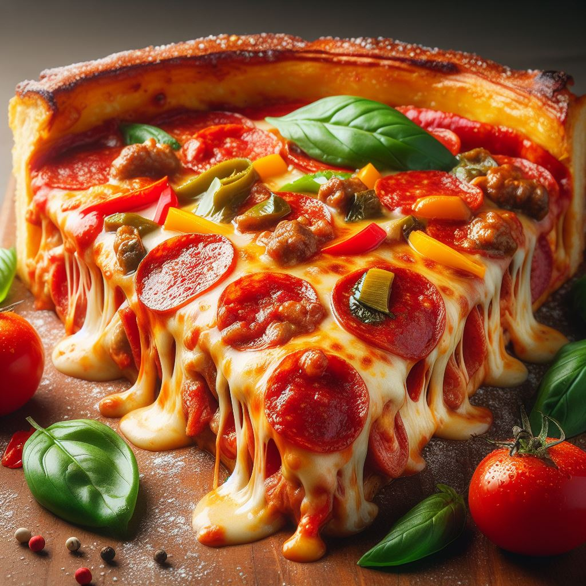

Pizza originated in Naples, Italy, in the 18th century as a simple flatbread topped with tomatoes, cheese, and olive oil—a dish primarily consumed by peasants. However, it gained popularity among the urban population and spread across Italy during the 19th century. In the late 19th and early 20th centuries, Italian immigrants brought pizza to the United States, where it evolved into various regional styles. Today, pizza is a global staple, enjoyed in countless variations around the world, from the classic Neapolitan to deep-dish Chicago style and thin-crust New York style.
